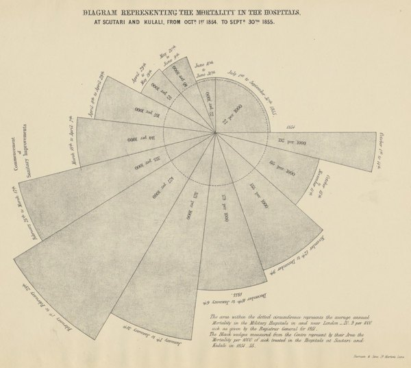
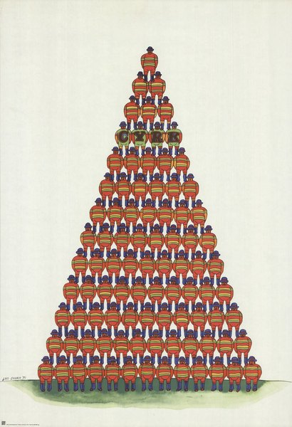
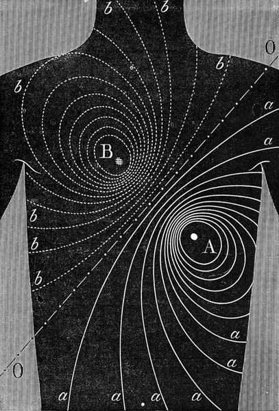
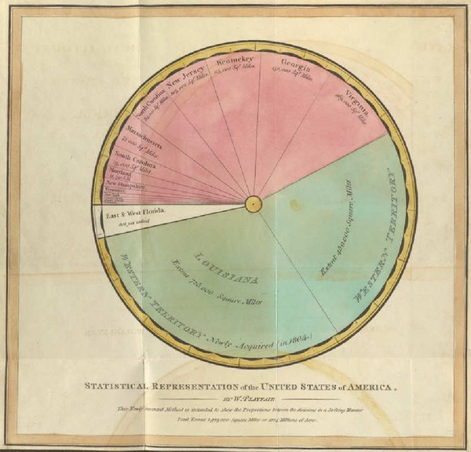
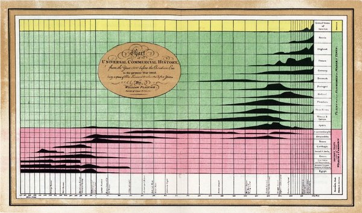
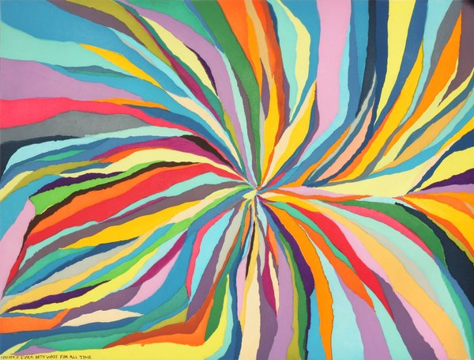
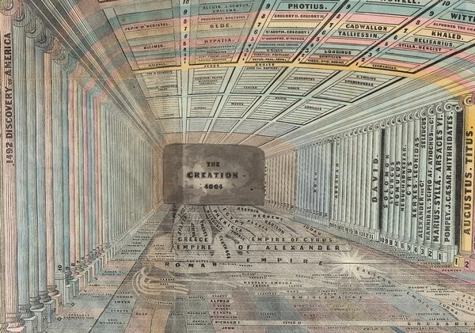

CRVI001896Joseph Kosuth - Ex Libris (Wittgenstein's Gift)
1990
1990

CRVI001889Alighiero Boetti - Der Himmel über

CRVI002383Dick Higgins - Hommage to Africa
1989
1989

CRVI002131Judy Chicago - 3 Star Cunts
1969
1969

CRVI002771Gerd Arntz - Erwerbstätige Bevölkerung der Erde
1938
1938

CRVI001937Gary Hume - Whistler
1998
1998

CRVI001496El Lissitzky - Announcer
1923
1923

CRVI001466Unidentified - Nursery interior with a child in a wicker cradle-cart

CRVI001618Pierre Bonnard - Family Scene
1893
1893

CRVI001444Joseph Maria Olbrich - Entwürfe zu Arbeiterhäusern
Plate from Architektur von Olbrich
Plate from Architektur von Olbrich

CRVI002770Florence Nightingale - Diagram Representing the Mortality in the Hospitals at Scutari and Kulali
1855
1855

CRVI002377Jan Sawka - Pyramid of massed figures

CRVI002343Sonia Delaunay - Plate from 'Ses peintures, ses objets, ses tissus simultanés, ses modes'
1925
1925

CRVI002772Gerd Arntz - Bank

CRVI001612Alphonse Mucha - Ornament
1901–2
1901–2

CRVI001445Joseph Maria Olbrich - Das Haus Olbrich, Darmstadt
Postcard · Darmstadt artists' colony · 1901
Postcard · Darmstadt artists' colony · 1901

CRVI002774Unattributed - Diagram of lines of force

CRVI002768William Playfair - Statistical Representation of the United States of America

CRVI001443Unidentified - Wiener Künstler-Postkarte
Postcard
Postcard

CRVI002704Makoto Wada - Boulevard of Crime: Jean-Louis Barrault
1979
1979

CRVI002417Filippo Tommaso Marinetti - Words and Freedom (Parole in libertà)
1914
1914

CRVI001804Roy Lichtenstein - Alka Seltzer
1966
1966

CRVI002780Unattributed - Untitled (concentric maze disc)

CRVI002277Frank Stella - Feneralia, from Imaginary Places

CRVI001614Alphonse Mucha - Documents Décoratifs: Plate 41
1901–2
1901–2

CRVI001486Kurt Schwitters - Merz 3 Portfolio: Plate 1
1923
1923

CRVI001814Peter Blake - The Beach Boys
1964
1964

CRVI002324Ed Ruscha - Standard Station

CRVI002645Leopold Stolba - Holzschnitt, Ver Sacrum 1903, S. 279
1903
1903

CRVI002769William Playfair - Universal Commercial History

CRVI001610Alphonse Mucha - Documents Décoratifs: Sweet Peas
1901–2
1901–2

CRVI001717Albert Bloch - Prof. Wayupski's Aerial Stunts
Comic strip
Comic strip

CRVI002332Ed Ruscha - Column with Speed Lines
2003
2003

CRVI002148Barbara Kruger - Untitled (You)

CRVI001592John Baeder - Red Robin Diner

CRVI002629Alfred Roller - Bookplate: Anna Anderle

CRVI001613Alphonse Mucha - Ilsée, Princesse de Tripoli
1897
1897

CRVI001902Douglas Huebler - Mediate
1978
1978

CRVI001827Victor Vasarely - Sinlag II (Blue with Red)

CRVI001809James Rosenquist - Space Dust
1989
1989

CRVI000832Seymour Chwast - Cars IV
Lithograph · calendar page · 30 × 48 cm · 1996
Lithograph · calendar page · 30 × 48 cm · 1996

CRVI002373Jan Sawka - Exodus (poster for STU's premiere of Leszek Moczulski's production)
1974
1974

CRVI002496Kiyoshi Awazu - Red and orange arcs on a dark ground

CRVI002145Barbara Kruger - Untitled (I shop therefore I am)

CRVI002147Barbara Kruger - Installation with text

CRVI001838Carlos Cruz-Diez - Couleur additive
1970
1970

CRVI002099Gilbert & George - Doubles

CRVI002364Bruno Munari - Negative-Positive
1991
1991

CRVI002405Peter Max - Two seated figures

CRVI001694Filippo Tommaso Marinetti - Parole in libertà
1932
1932

CRVI002379Jan Sawka - Jan Sawka: Paintings & Constructions (exhibition poster)
1985
1985

CRVI002537Koloman Moser - Ver Sacrum, poster for the XIII Secession exhibition
1902
1902

CRVI002638Josef Maria Auchentaller - Studie zu einem Placat in 3 Farben

CRVI001835Unidentified - Striped composition

CRVI002184Etel Adnan - Équilibre

CRVI002423Gustav Klutsis - Axionometric Construction
1921
1921

CRVI002276Frank Stella - Untitled
1974
1974

CRVI002370Jan Sawka - Print with framed landscape panels above a figure at a wall

CRVI001441Unidentified - Woman with flowing hair

CRVI001440Josh MacPhee - Huelga

CRVI001072David Rudnick - Artwork for black midi

CRVI001401Marvin Israel - Handiwork, from Graphik USA
Marvin Israel · 1968 · screenprint, one from a portfolio of eight · 1968
Marvin Israel · 1968 · screenprint, one from a portfolio of eight · 1968

CRVI001697Filippo Tommaso Marinetti - Parole in libertà: Verbalisation dynamique de la route

CRVI001750Unidentified - Interior of the Kandinsky/Klee Master House, Dessau

CRVI001933Sandro Chia - Surprising Novel, Chapter Four

CRVI001469Aubrey Beardsley - Isolde
1895
1895

CRVI002260Roy Lichtenstein - M-Maybe

CRVI001751Unidentified - Abstract composition after Kandinsky

CRVI002739Chris Johanson - Forever Is Both Ways for All Time (Perceptions #2)
2007
2007

CRVI001853Ben Vautier - L'art est inutile / Pas d'art / À bas l'art

CRVI002412Filippo Tommaso Marinetti - TUMB TUMB / GRANG GRANG / ZZZANG-ZZZANG-TUMB

CRVI001497El Lissitzky - New Man
1923
1923

CRVI002371Jan Sawka - Two suited figures sharing a red head

CRVI001753Unidentified - The Bauhaus building, Dessau

CRVI002319Tauba Auerbach - Marbled composition

CRVI002271Sol LeWitt - Forms Derived from a Cube

CRVI002270Sol LeWitt - Bands and arcs of colour

CRVI001495El Lissitzky - Flying to Earth from a Distance
1920
1920

CRVI001938Unidentified - Woman with pink flowers

CRVI002259Roy Lichtenstein - Crying Girl
1963
1963

CRVI002281John Baldessari - Yellow interior with a red squiggle

CRVI002320Tauba Auerbach - Marbled composition

CRVI002263Roy Lichtenstein - Sunrise

CRVI002406Peter Max - Right Now
1970
1970

CRVI002965Keiichi Tanaami - untitled

CRVI002966Keiichi Tanaami - untitled

CRVI002967Keiichi Tanaami - untitled

CRVI002968Keiichi Tanaami - untitled

CRVI001411Robert Rauschenberg - Banner (Stoned Moon)
Robert Rauschenberg · 1969 · lithograph, Gemini G.E.L. · 1969
Robert Rauschenberg · 1969 · lithograph, Gemini G.E.L. · 1969

CRVI002969Keiichi Tanaami - untitled

CRVI002116Ellsworth Kelly - Blue on White
1961
1961

CRVI002280John Baldessari - Three figures with a framed painting

CRVI002421Bruno Munari - Peano Curves
1991
1991

CRVI001057 - Playing cards

CRVI002323Ed Ruscha - Honk

CRVI002504Milton Glaser - Kandinsky
1984
1984

CRVI002146Barbara Kruger - Untitled (The future belongs to those who can see it)

CRVI002404Peter Max - Solar Phenomenon

CRVI002366Tauba Auerbach - Flow

CRVI001852Unidentified - AN ANTHOLOGY

CRVI002262Roy Lichtenstein - Explosion

CRVI001832Richard Anuszkiewicz - Red, White and Blue, from 1776 USA 1976: Bicentennial Prints
1975
1975

CRVI001066David Rudnick - Terrain (front)
Published by It's Nice That
Published by It's Nice That

CRVI001383Harry Bertoia - Untitled
Print by Harry Bertoia · c. 1945 · Whitney Museum of American Art · 1945
Print by Harry Bertoia · c. 1945 · Whitney Museum of American Art · 1945

CRVI001502Gustav Klutsis - Spartakiada Moskau 1928
Postcard · 1928
Postcard · 1928

CRVI001649Pablo Picasso - The Frugal Meal
September 1904, printed 1913
September 1904, printed 1913

CRVI002456Roberto Matta - Figures around a lit basin

CRVI001840Carlos Cruz-Diez - Miércoles, from Serie Semana

CRVI002258Roy Lichtenstein - Shipboard Girl

CRVI002427Gustav Klutsis - Postcard for the All-Union Spartakiada
1928
1928

CRVI002282John Baldessari - Poster with a green dot

CRVI002278Frank Stella - Untitled

CRVI001499Gustav Klutsis - Postcard Commemorating the Russian All-Union Spartakiada
1928
1928

CRVI001067David Rudnick - Terrain (back)
Published by It's Nice That
Published by It's Nice That

CRVI001805Roy Lichtenstein - Brushstroke
1965
1965

CRVI001595Tom Blackwell - Shatzi
1978
1978

CRVI002100Gilbert & George - Stained-glass panel composition

CRVI002378Jan Sawka - Overlapping discs with faces and city names

CRVI002043Christopher Wool - Untitled (P603)
2010
2010

CRVI001382Harry Bertoia - Untitled
Print by Harry Bertoia · c. 1943 · Whitney Museum of American Art · 1943
Print by Harry Bertoia · c. 1943 · Whitney Museum of American Art · 1943

CRVI001781Shōzō Shimamoto - Mail Art is a supranational peace movement

CRVI002773Unattributed - Synchronological chart of universal history

CRVI002279John Baldessari - Two figures and a blue drawing

CRVI001470Aubrey Beardsley - How La Beale Isoud Wrote to Sir Tristram

CRVI001471Aubrey Beardsley - The Climax
1893
1893

CRVI001632Ernst Ludwig Kirchner - Wehrlin, Facing Front
1924
1924

CRVI001535David Alfaro Siqueiros - Self-Portrait
1936
1936

CRVI001647Pablo Picasso - Head of a Woman: Madeleine
1905, printed 1913
1905, printed 1913

CRVI001439Unidentified - Wall-covering design

CRVI002149Barbara Kruger - Untitled (You kill time)

CRVI002409Bruno Munari - Negativo positivo
1991
1991

CRVI002642Maximilian Kurzweil - Der Polster (The Cushion)
1903
1903

CRVI002112Roman Opałka - Z wnętrza
1969
1969

CRVI002019Zhang Xiaogang - Bloodline Series: Big Family Series
2006
2006

CRVI002644Leopold Stolba - Holzschnitt, Ver Sacrum 1903, S. 281
1903
1903

CRVI001508Edward Wadsworth - Illustration (Typhoon)
1914–1915
1914–1915

CRVI001813Richard Hamilton - Swingeing London 67 (f)
1969
1969

CRVI002372Jan Sawka - Crash
1977
1977